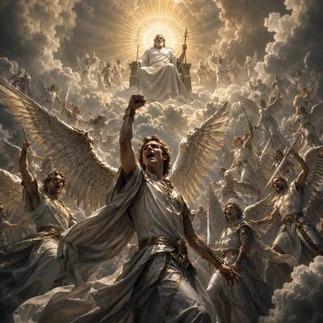

Pocas historias son tan conocidas dentro del cristianismo como la de Lucifer, el supuesto ángel más bello y perfecto del Cielo que, cegado por el orgullo, se rebeló un día contra «Dios», arrastrando consigo a una tercera parte de los ángeles, y que terminó convertido en Satanás. La imagen ha inspirado sermones, pinturas, novelas y películas durante siglos. Sin embargo, si buscas esta historia en la Biblia, nunca la encontrarás. Simplemente no está allí. Porque la figura del «ángel caído» es el resultado de una construcción teológica y literaria desarrollada a lo largo de muchos siglos, mediante la combinación de textos dispersos, interpretaciones posteriores, escritos apócrifos y una considerable dosis de imaginación religiosa.


El primer problema es que Lucifer ni siquiera aparece en la Biblia hebrea. El nombre procede de la traducción latina realizada por Jerónimo en el siglo IV. En Isaías 14:12 aparece la expresión hebrea Helel ben Shajar, que significa aproximadamente «brillante, hijo de la aurora», y que alude poéticamente al planeta Venus, el lucero de la mañana. Y el contexto no habla de ningún ángel rebelde, sino que constituye una sátira contra el arrogante rey de Babilonia. Al traducir el texto, Jerónimo utilizó la palabra latina «lucifer», que significa «portador de luz» o «lucero», como un sustantivo común y no como un nombre propio. Sin embargo, con el paso del tiempo, muchos lectores olvidaron el contexto original, y comenzaron a interpretar Lucifer como si fuera el nombre personal de Satanás antes de su supuesta caída. Y nació así una de las figuras más famosas de la teología cristiana.
A esta interpretación se sumaron otros textos: en Ezequiel 28 aparece un poema dirigido al rey de Tiro. Allí se le describe simbólicamente como un querubín lleno de sabiduría y belleza, adornado con piedras preciosas y asociado al Edén. El propósito era denunciar la arrogancia del gobernante; pero generaciones posteriores interpretaron estas imágenes como una referencia a Satanás antes de su supuesta rebelión. Además, se incorporó una breve frase de Jesús en Lucas 10:18: «Yo veía a Satanás caer del cielo como un rayo». Aunque el contexto es ambiguo, muchos la conectaron con Isaías y Ezequiel, para construir la narrativa de una caída celestial anterior a la humanidad.
Y finalmente, Apocalipsis 12 describe una batalla en el cielo, en la que el arcángel Miguel, jefe de los ejércitos de «Dios» según las tradiciones judía y cristiana, expulsa al dragón y a sus ángeles. Sí, porque el dios bíblico tiene ejércitos en el Cielo, por lo que a menudo se le llama «Señor de los ejércitos» (Yahweh Sabaoth). Pero, aunque el propio texto del Apocalipsis sitúa ese episodio dentro de su marco profético, no antes de la creación humana, la tradición cristiana terminó trasladándolo a un pasado remoto anterior a Adán y Eva.
Pero además de estos textos bíblicos, influyeron numerosos escritos judíos y cristianos antiguos, como el «Libro de Enoc» y «La vida de Adán y Eva», obras anónimas escritas por diferentes autores y compuestas principalmente entre el siglo IV AEC y el siglo I EC. En ellos aparecen ángeles rebeldes, conflictos celestiales y seres espirituales que desafían la autoridad divina. Y muchas de estas ideas fueron absorbidas gradualmente por la tradición cristiana, hasta terminar formando parte del imaginario popular.
De hecho, conceptos que muchos creyentes consideran hoy evidentes —como que los ángeles fueron creados antes del mundo, que algunos se rebelaron o que ciertos espíritus rechazaron el lugar privilegiado prometido a los seres humanos— proceden más de estas obras literarias, que de la propia Biblia. Quien busque al Lucifer que imagina la mayoría de los cristianos probablemente, lo encontrará más fácilmente en la literatura que en las Escrituras.
La literatura tuvo, de hecho, un papel decisivo. En el siglo XIV, el italiano Dante Alighieri (1265-1321) popularizó en «La Divina Comedia», la imagen de Lucifer atrapado en el centro del infierno. Y tres siglos después, el inglés John Milton (1608-1674) publicó «El Paraíso Perdido» (1667), obra que moldeó definitivamente la visión moderna del personaje. El Lucifer de Milton es hermoso, brillante, orgulloso, desafiante y casi heroico. La célebre idea de que es «mejor reinar en el infierno que servir en el cielo» procede de esta obra, no de la Biblia. Y para millones de personas, esta representación literaria terminó siendo más influyente que los propios textos sagrados. Al grado de que si de alguna forma Jesús regresara, se quedaría totalmente extrañado de tantas ideas raras que él nunca conoció ni enseñó.
Pero incluso si aceptamos provisionalmente la narrativa tradicional, aparecen varios problemas teológicos: el primero tiene que ver con la omnisciencia divina. Si «Dios» sabía desde antes de crear a Lucifer que éste se rebelaría, entonces creó deliberadamente al futuro líder de la insurrección celestial. Y si no lo sabía, la omnisciencia divina queda comprometida. Y la segunda dificultad es preguntarse para qué un ser perfecto y autosuficiente necesitaría crear miles o millones de seres destinados principalmente a servirle y glorificarle. La propia palabra «ángel» deriva del griego ángelos, que significa «mensajero». Pero si aún no existían seres humanos, ¿mensajeros entre quiénes?
La respuesta tradicional suele ser que los ángeles fueron creados para adorar a «Dios». Pero esto conduce a la pregunta: ¿Para qué necesitaría alabanzas constantes un ser que ya posee toda la gloria imaginable? La imagen de incontables criaturas dedicadas eternamente a exaltar a «Dios», plantea interrogantes acerca de la naturaleza de esa supuesta perfección divina, y dice mucho de la salud mental de este «Dios».
Pero otro problema surge con el origen del mal: si Lucifer pecó antes que Adán y Eva, entonces el primer pecado no ocurrió en la Tierra sino en el Cielo. Y eso implica que el mal apareció en el lugar supuestamente más perfecto que puede existir. Y si pudo surgir allí una vez, ¿qué impediría que surgiera de nuevo?
Asimismo, si Lucifer tuvo la capacidad de rebelarse, significa que en el Cielo existe el libre albedrío. Pero si existe libertad para desobedecer, entonces también existe la posibilidad de pecar. Y en ese caso, el Cielo no sería un lugar libre de conflictos morales, por lo que la idea de una perfección absoluta comienza a enfrentar dificultades lógicas.
Resulta muy llamativo que el cristianismo sitúe el origen de los problemas morales en el Jardín del Edén, un lugar de la Tierra, que la Biblia (en Génesis 2:10-14) describe como regado por los ríos Hidekel (Tigris) y Perat (Éufrates), es decir, en la zona de la Mesopotamia. Pero la historia de Lucifer coloca una rebelión, una conspiración, y hasta una guerra celestial, antes de que apariera el primer ser humano. En otras palabras, según esa narrativa, los problemas comenzaron en el Cielo, mucho antes de que existiera la humanidad. Y entonces, ¿en qué quedan el «Pecado Original» y el supuesto sacrificio de Jesús?
En fin, desde una perspectiva histórica, la figura de Lucifer como el ángel perfecto que después se convirtió en Satanás, no procede de ningún relato bíblico específico. Es el resultado de siglos de traducciones, reinterpretaciones, especulaciones teológicas, literatura apócrifa y creatividad artística. Y haciendo esta aclaración, la historia del famoso «ángel caído» deja de ser una «revelación divina», para verse como lo que es: una elaborada construcción mitológica desarrollada por seres humanos para explicar el origen del mal, aunque en el proceso haya terminado generando más preguntas que respuestas.
[Godless Freeman]
Comentarios
Comments powered by Disqus